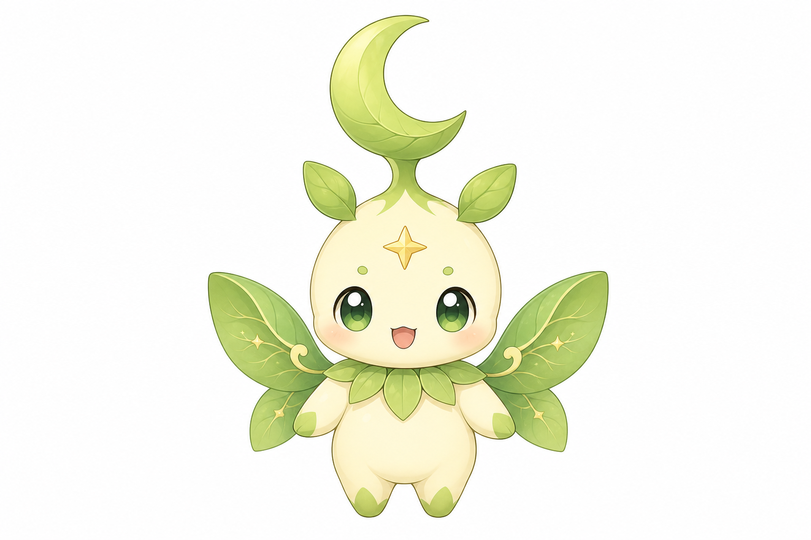
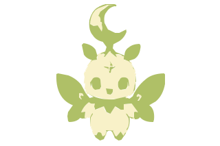
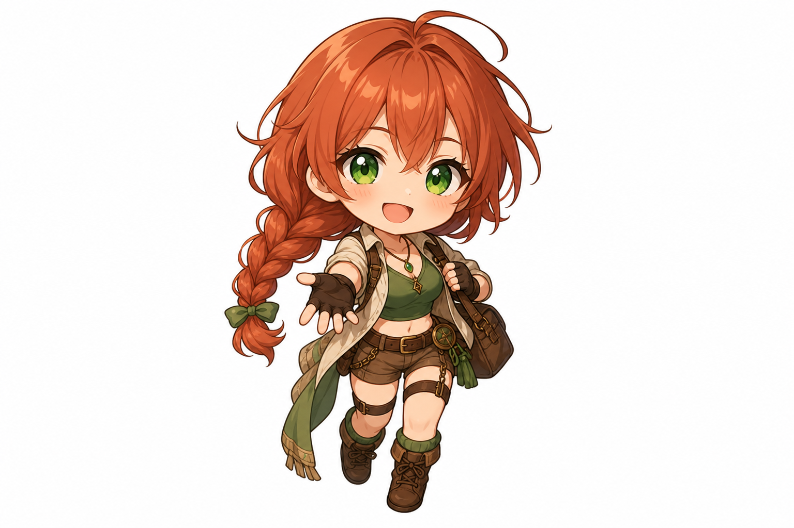
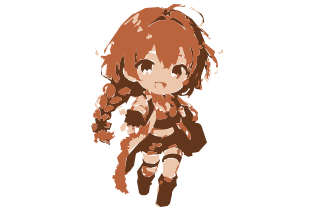

Pousselune (moon-sprout)


A gauche : image generee par IA (fond blanc). A droite : meme sujet passe en SVG simplifie (10 couleurs max, fond transparent) — pret pour le mini-jeu sans detourage manuel.



